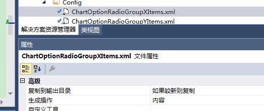

原文出处:本文由博客园博主霸道流氓提供。
原文连接:https://www.cnblogs.com/badaoliumangqizhi/p/11526410.html
原文连接:https://www.cnblogs.com/badaoliumangqizhi/p/11526410.html
场景
DevExpress的RadioGroup的items选项如果是不确定的话，需要其从配置文件中加载。
实现
在项目目录下新建Config文件夹，文件夹下新建xml配置文件。
<?xml version="1.0" encoding="utf-8" ?>
<!--图形选项功能Dialog中的RadioGroup中的X轴Items选项配置-->
<items>
<item>电流</item>
<item>电压</item>
<item>温度</item>
<item>比容量</item>
<item>能量</item>
<item>比能量</item>
<item>交流内阻</item>
<item>功率</item>
<item>dQ/dV</item>
<item>dQm/dV</item>
</items>
并且设置在其较新时复制到输出目录：

然后在显示RadioGroup的窗体的加载事件中。
List<string> XradioGrupItems = initRadioGroupItem(Global.RADIO_GROUP_ITEM_FILEPATH_X);c读取配置文件中的item选项。
public List<string> initRadioGroupItem(string xmlFilePath)
{
List<string> radioGrupItems = ChartOptionHelper.getRadioGroupItems(xmlFilePath);
return radioGrupItems;
}
这里调用了工具类去访问配置文件的item并存到一个list中。
public static List<string> getRadioGroupItems(string xmlFilePath)
{
List<string> radioGroupItems = new List<string>();
XmlDocument xml = ReadXMLConfigHelper.readXml(xmlFilePath);
XmlNodeList nodeList = ReadXMLConfigHelper.getNodeListByXpath(xml, Global.RADIO_GROUP_ITEM_XPATH);
foreach(XmlNode xmlNode in nodeList)
{
radioGroupItems.Add(xmlNode.InnerText);
}
return radioGroupItems;
}
其中业务工具类又调用了公共的读取配置文件的工具类。
工具类方法参照：
C#中读写Xml配置文件常用方法工具类：
https://blog.csdn.net/BADAO_LIUMANG_QIZHI/article/details/100879220
上面全局变量的Xpath的表达式的参数为全局变量：
public const string RADIO_GROUP_ITEM_XPATH = "items/item";
生成RadioGroup并给其赋值
RadioGroup radioGroupX = new RadioGroup();
foreach (string s in XradioGrupItems)
{
//每一个单元按钮对应的选项item
RadioGroupItem item = new RadioGroupItem();
//设置选项的value值
item.Value = s;
//设置选项的描述值 即 要显示的值
item.Description = s;
//使选项启用
item.Enabled = true;
//将新增的选项添加到radiogroup的Items中
radioGroupX.Properties.Items.Add(item);
}
//设置默认选中值
radioGroupX.EditValue = xAttribute.Title;
//设置宽度
radioGroupX.Width = Global.CHART_OPTION_WIDTH;
//加1 保持与Y轴高度一致
radioGroupX.Height = Global.RADIO_HEIGHT * (XradioGrupItems.Count + 1);
//设置位置
radioGroupX.Location = new Point(Global.NOGROUP_HORIZONTAL_DISTANCE , Global.GROUP_VERTICAL_DISTANCE);
//name
radioGroupX.Name = "radioGroupX";
//设置父级容器
radioGroupX.Parent = panelControlX;